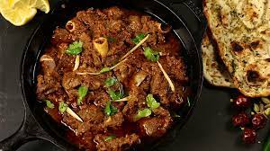

Mutton Karahi

Mutton Karahi
Mutton Karahi, also referred to as Karahi Gosht when consisting of lamb, is a classic Indian dish consisting of various spices and fresh, wholesome ingredients. In Pakistan, it's mostly made with mutton. However, lamb karahi seems to be more common in the rest of the world. The best part is that it's the exact same recipe with either meat.
Go Back